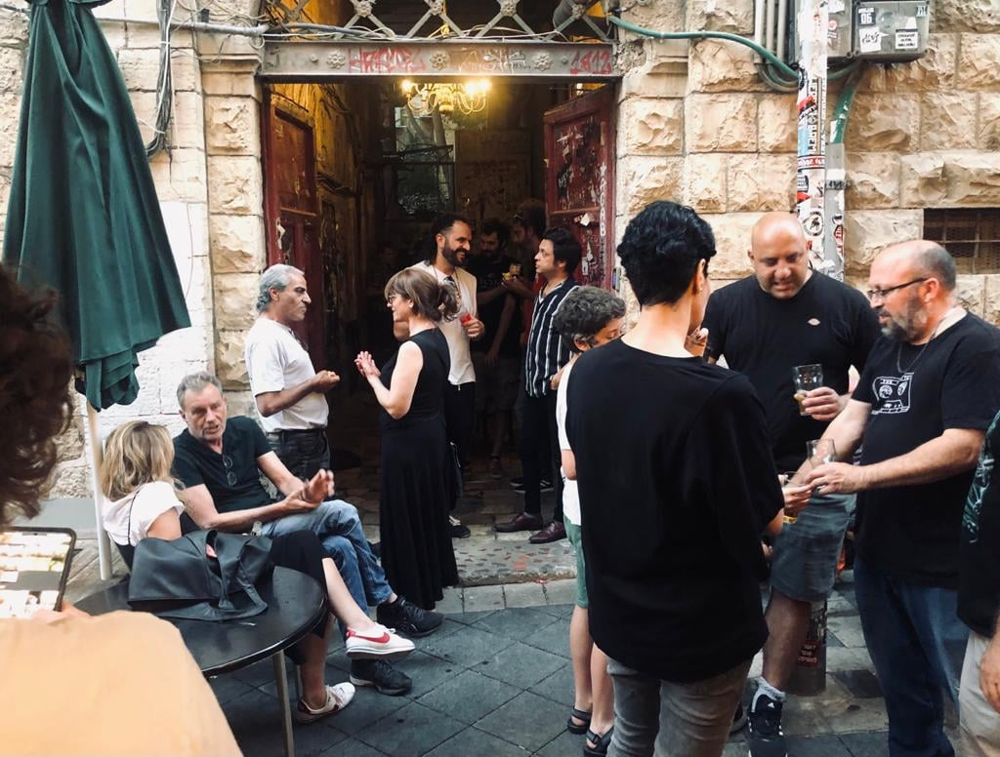
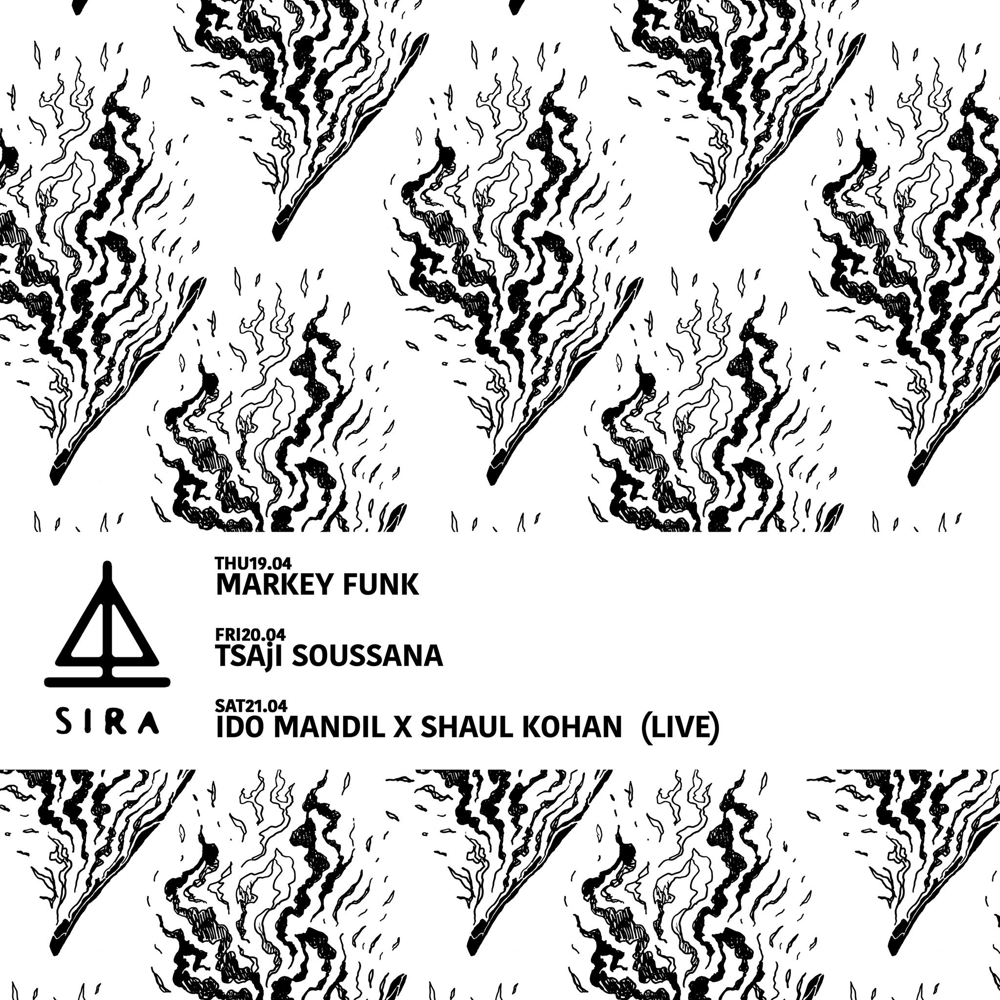
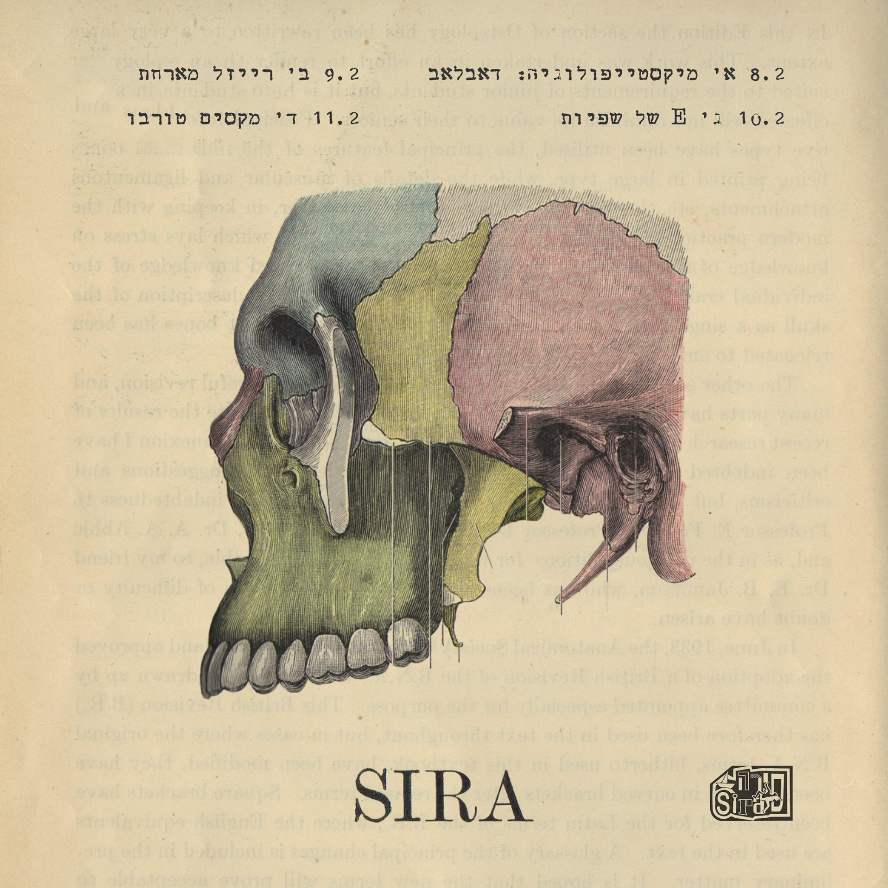

סירה
מקום

הסירה נפתח ב־2005 במקומו של הדיוואן, על ידי ליאור גוטריימן (שקודם לכן היה חלק מהסטודיו ב12). בסירה התקיימה תמיד פעילות מוזיקלית, שמבחינות מסוימות הייתה מעין המשך לקו המוזיקלי של הדיוואן.
היו אירועים מתקופת הדיוואן שהמשיכו להתקיים גם בסירה – כמו מקלט מוצאי שבת, ערב היפ הופ פריסטייל, עם דיג'יי מתחלף, למשל, מארקי פאנק והדיג'יי בן (נהרג בפיגוע באוניברסיטה בהר הצופים, והוריו הורישו לדיוואן את הפטיפונים שלו, שמשמשים בסירה עד היום). כמו כן תקלטו במקום לייבלים ומסיבות, לדוגמה פאקוטק. כיום רוב המתקלטים הם אנשים שעובדים במקום – כמו מארקי פאנק, יובל – סיגי אום, גבריאל (גברי) גודמן מרעש רקורדס. אופי התקלוט במקום השתנה בעקבות השינוי בזמינות המוזיקה, מה שהפך את פעולת התקלוט לפחות ייחודית. בעקבות כך הרעיון שהניע את השינוי במקום היה שהקהל יבוא להאזין למה שיש לאנשי הסירה להציע.
את הפרסומים החודשיים על הפעילות במקום (גרפיקה ופוסטרים) הכינו גוטריימן ותומר מרזל, השותפה בשנים 2005-2009.

